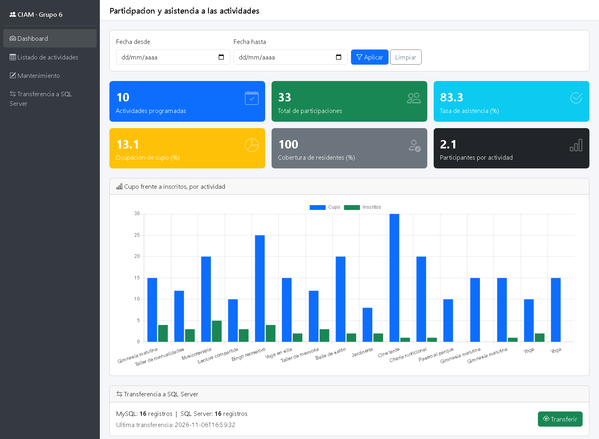
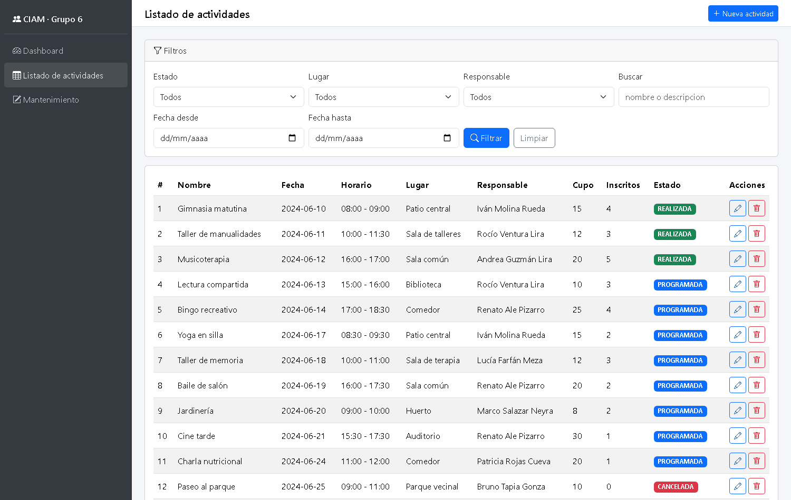
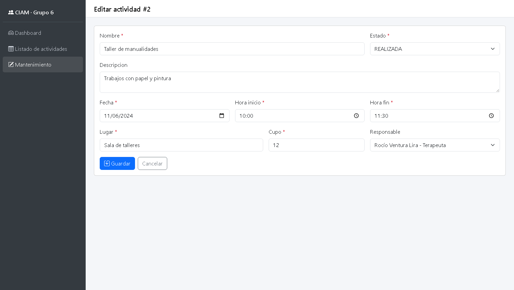
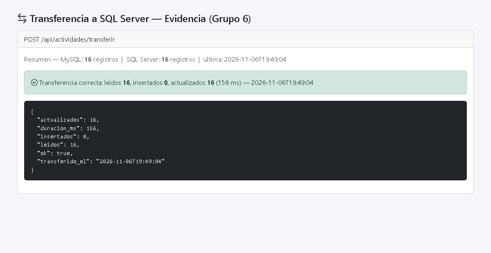

Desarrollo de Aplicaciones Basado en Plataformas
KPIs, CRUD y transferencia de datos de MySQL a SQL Server con Flask y AdminLTE
Sistema de Gestión de Residencia para Adultos Mayores (CIAM)
| Dato | Detalle |
|---|---|
| Docente | Daniel Abraham Alva Segura |
| Ciclo | IV |
| Fecha de entrega | 06/11/2026 |
| Módulo asignado | Actividades (tablas actividades, participaciones) |
| Integrante | Rol |
|---|---|
| Abarca Meléndez Luis Marcelo | Líder y base de datos |
| Vargas Córdova Diego Arnold | Backend de KPIs |
| López Tuesta Julio César | Backend de CRUD y transferencia |
| Farroñán Quiñonez Alex Josué | Frontend del dashboard |
| Meza Villacorta Jhohan Lizandro | Frontend de listado y pruebas |
El presente informe documenta el módulo de Actividades desarrollado por el Grupo 6 como parte del proyecto integrador. El módulo expone, mediante una API REST construida con Flask (Python), los indicadores de gestión (KPIs), una gráfica comparativa, el mantenimiento CRUD, un listado con filtros y la transferencia de datos de MySQL a SQL Server. El front se construyó sobre la plantilla AdminLTE / Bootstrap 5.
Objetivos cumplidos:
| Capa | Tecnología | Responsabilidad |
|---|---|---|
| Presentación | AdminLTE 4 / Bootstrap 5, JavaScript (fetch), Chart.js | Dashboard, listado, formulario CRUD y botón Transferir |
| API | Flask (Python) con un Blueprint del módulo | Endpoints REST en JSON: KPIs, gráfica, CRUD, listado y transferencia |
| Origen | MySQL/MariaDB (base sistema_residencia), PyMySQL | Datos operativos de actividades y participaciones |
| Destino | SQL Server (base residencia_sqlserver), pyodbc | Copia de la tabla del módulo |
| Pruebas | Postman / curl | Evidencia de cada endpoint |
app.py · config.py · db_mysql.py · db_sqlserver.py ·
modulo/routes.py · modulo/transferencia.py · sql/sqlserver_actividades.sql ·
html/ (index3, tables/data, crud) · postman/ · .env.example ·
requirements.txt
| N° | Componente | Descripción |
|---|---|---|
| 1 | API de KPIs y dashboard | Endpoint que calcula 6 indicadores y los muestra como tarjetas; cada uno con su fórmula documentada. |
| 2 | Gráfica comparativa | Barras agrupadas: cupo frente a residentes inscritos, por actividad. |
| 3 | CRUD | Insertar, consultar, actualizar y eliminar desde un formulario, con validaciones y reglas de negocio. |
| 4 | Listado con filtros | Tabla con filtros por estado, lugar, responsable, búsqueda y rango de fechas. |
| 5 | Transferencia a SQL Server | API con MERGE idempotente y botón Transferir en el front. |
| 6 | Pruebas | Cada endpoint probado con Postman/curl, con evidencia. |
| 7 | Menú tipo AdminLTE | Barra lateral con las opciones del módulo, igual en todas las páginas. |
Todos los indicadores se calculan en SQL (no en JavaScript); las razones usan NULLIF para
evitar la división entre cero.
| N° | Indicador | Fórmula de cálculo |
|---|---|---|
| 1 | Actividades programadas | COUNT(*) con estado = 'PROGRAMADA' dentro del rango |
| 2 | Total de participaciones | COUNT(*) de participaciones de las actividades del rango |
| 3 | Tasa de asistencia (%) | ASISTIO ÷ (ASISTIO + NO_ASISTIO) × 100 |
| 4 | Ocupación de cupo (%) | participaciones ÷ SUM(cupo) × 100 |
| 5 | Cobertura de residentes (%) | residentes distintos que participan ÷ residentes ACTIVO × 100 |
| 6 | Participantes por actividad | participaciones ÷ actividades |
| Método | Ruta | Descripción | Códigos |
|---|---|---|---|
| GET | /api/actividades/kpis | KPIs del dashboard (acepta fecha_desde/fecha_hasta) | 200 · 400 |
| GET | /api/actividades/grafico | Series de la gráfica (cupo vs inscritos) | 200 |
| GET | /api/actividades | Listado con filtros | 200 · 400 |
| GET | /api/actividades/<id> | Un registro | 200 · 404 |
| POST | /api/actividades | Crear | 201 · 400 · 409 |
| PUT | /api/actividades/<id> | Actualizar | 200 · 400 · 404 · 409 |
| DELETE | /api/actividades/<id> | Eliminar (cascada de participaciones) | 200 · 404 |
| GET | /api/actividades/catalogos | Personal responsable y lugares | 200 |
| POST | /api/actividades/transferir | Copiar a SQL Server (MERGE) | 200 · 500 · 503 |
| GET | /api/actividades/transferencia/resumen | Conteos MySQL / SQL Server | 200 · 503 |




El endpoint POST /api/actividades/transferir lee todas las actividades de MySQL, abre una
transacción en SQL Server y aplica un MERGE por id_actividad (actualiza si existe,
inserta si no). La operación es idempotente: ejecutarla varias veces no duplica datos.
| Caso | Petición | Resultado |
|---|---|---|
| KPIs | GET /api/actividades/kpis | 200 — tasa_asistencia 83.3, participaciones 33 |
| Filtros | GET /api/actividades?estado=PROGRAMADA | 200 — 10 registros |
| Crear | POST /api/actividades | 201 creado |
| Validación horas | POST con hora_fin ≤ hora_inicio | 400 error |
| Regla de cupo | PUT con cupo < inscritos | 409 conflicto |
| No existe | GET /api/actividades/99999 | 404 |
| Transferencia | POST /api/actividades/transferir | 200 — idempotente |
La evidencia detallada está en postman/evidencia_pruebas.txt y la colección en
postman/coleccion.json.
.env (no versionado); se entrega solo .env.example.residencia_app (solo SELECT/INSERT/UPDATE/DELETE), no root.%s en MySQL, ? en pyodbc); sin concatenar valores.El módulo de Actividades cumple con los siete componentes exigidos: API de KPIs con fórmulas documentadas, gráfica comparativa, CRUD con validaciones y reglas de negocio, listado con múltiples filtros, transferencia idempotente a SQL Server, pruebas documentadas y una interfaz coherente con la plantilla AdminLTE. El sistema fue verificado de extremo a extremo con datos reales, confirmando el correcto cálculo de indicadores y la integridad de la transferencia entre ambos motores de base de datos.